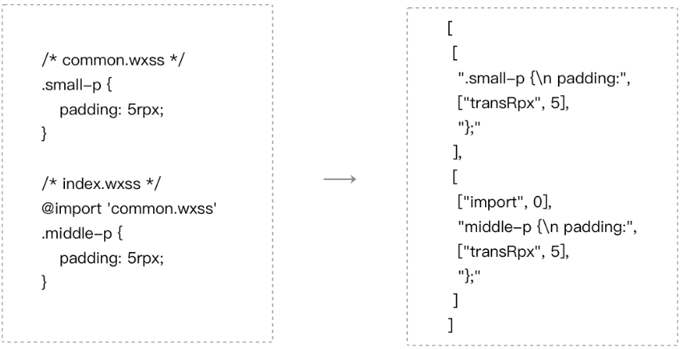

from developers.weixin.qq.com:
WXSS (WeiXin Style Sheets) 是一套样式语言，用来决定 WXML 的组件应该怎么显示。为了适应广大的前端开发者，WXSS 具有 CSS 大部分特性。同时为了更适合开发微信小程序，WXSS 对 CSS 进行了扩充以及修改。
与 CSS 相比，WXSS 扩展的一些特性，包括rpx尺寸单位和样式导入语法，这些特性都是WebView无法直接理解的。
微信开发者工具内置了一个二进制的WXSS编译器，这个编译器接受WXSS文件列表，分析文件之间的引用关系，同时预处理rpx，输出一个样式信息数组，如图10-4，每个WXSS文件对应于这个数组中的一项。

图9-4 WXSS的编译过程
在运行时，根据当前的屏幕宽度，计算出1rpx对应多少像素单位，然后将样式信息数组转换成最终的样式添加到页面中。
由于样式在微信客户端存在兼容性问题，为了方便开发者，微信开发者工具提供了上传代码时样式自动补全的功能，利用PostCSS 对WXSS文件进行预处理，自动添加样式前缀。